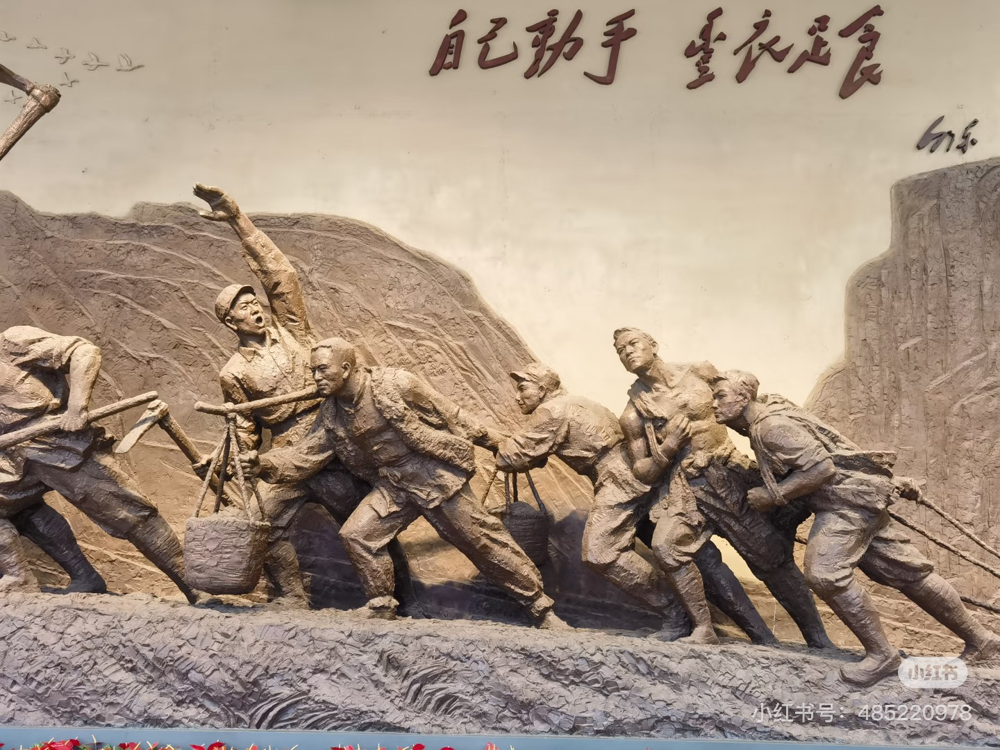
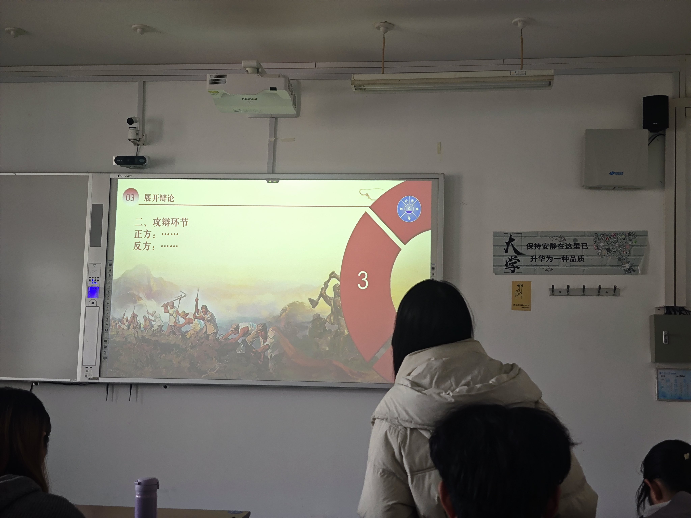
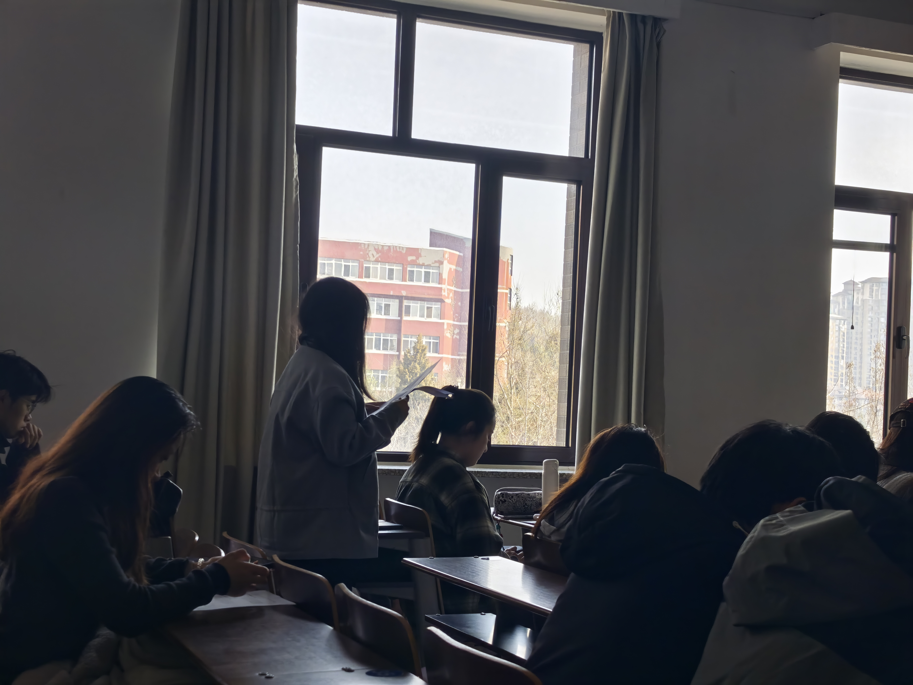

以数字化方式再现延安大生产运动的历史背景、精神内核与时代价值， 让“自力更生、艰苦奋斗”的精神在今天继续发光。
从生存危机到精神定格，了解延安大生产运动的历史脉络与现实启示。
一、历史背景 · 内外夹击的生存危机
1941年，抗日战争进入相持阶段，日军对根据地疯狂“扫荡”，国民党发动第二次反共高潮， 对陕甘宁边区实行军事包围 + 经济封锁。
边区脱产人员达7.3万人，粮食缺口16万石，几乎到了“不战而亡”的绝境。
二、核心号召与总方针
毛泽东号召：自己动手，丰衣足食
经济工作总方针：发展经济，保障供给

三、发展五阶段（时间轴）
四、典型典范：南泥湾大开发
三五九旅开进荒无人烟的南泥湾，“一把镢头一支枪，生产自给保卫党中央”。 短短数年，把“烂泥湾”变成了“陕北江南”。
五、精神内核 · 永不过时
输入问题，快速了解延安大生产运动的背景、意义与精神价值。
AI：你好！我是延安精神小助手，你可以问我：
• 大生产运动的意义
• 什么是群众路线
• 自力更生与合作的关系
• 南泥湾为什么重要


新时代破解核心技术“卡脖子”
正方：优先自力更生 VS 反方：优先全球合作
主题：延安的镢头 → 今天的键盘
微电影以历史与现实相呼应的方式，展现延安精神在新时代青年中的延续与传承。
点击观看微电影课程主题：薪火耕耘——延安大生产运动的精神溯源与当代回响
指导老师：谭红梅
小组成员： 蒋雅鑫、张雅、曾欣欣、周佳美、王美云、吴越、李婉瑜、张闰婕、 张朵、张栖宁、王睿祥、吴思铜、杨婧、张博宇、吴琪